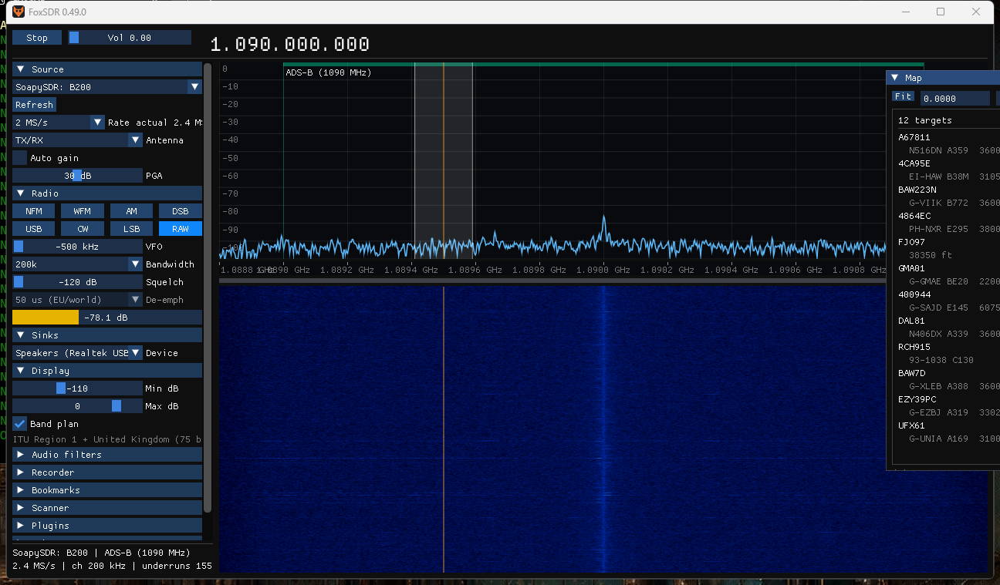
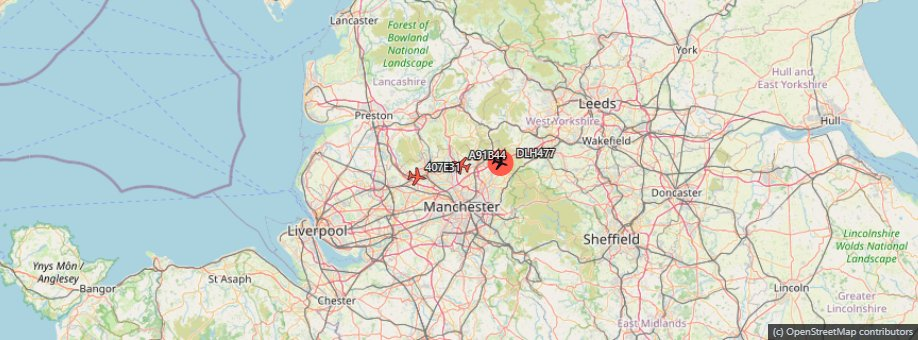

A software-defined radio receiver for Windows — and for the browser on your own network.
Version 0.49.0 · 64-bit Windows 10 or later · about 3 MB

Spectrum and waterfall, NFM, WFM, AM, DSB, USB, LSB and CW, squelch, AGC, noise reduction, manual and automatic notch, and stereo FM with RDS.
Anything SoapySDR can reach, with antenna, sample rate and per-stage gain control. Developed against an Ettus B200. It also runs with no radio at all, using the signal generator or an I/Q recording.
Aircraft, vessels and stations plotted together, with optional map imagery. Click a target to go to it; double-click to follow it.
ADS-B, AIS, APRS, SSTV, Morse, RTTY and POCSAG, installed from a catalogue inside the application. Nothing is fetched until you press Browse.
Bookmarks, a band scanner, band plans, and recording of both audio and raw I/Q.
The whole interface is available over your network, at the same feature level as the desktop — so the receiver can live in the loft and be driven from the sofa.
Most remote interfaces give you a frequency box and a volume slider. This one gives you the spectrum, the waterfall, the map, the decoders, the recorder, the scanner, the plugin catalogue and live audio — the same controls as the desktop window, because they are the same product.
Open the settings panel, set a password, tick the box. It is off by default, defaults to this-machine-only, and refuses to serve your network at all until a password is set.

It works and it is used daily, and it is still pre-1.0 — the interface and the plugin catalogue are still moving.
Decoder verification, stated honestly. Every decoder has an automated test suite, and the audio chain has been confirmed by ear on broadcast FM. Of the decoders, only ADS-B has been confirmed against real off-air signals — aircraft decoded live, with ICAO address blocks and callsigns agreeing across independent message types.
The others (AIS, APRS, SSTV, Morse, RTTY, POCSAG) are verified against synthesised signals and published constants. That is real evidence and it has caught real bugs, but it is not the same thing as hearing a real transmission, and it would be misleading to imply otherwise. The Inmarsat-C decoder is published at 0.1.0 and marked experimental: roughly ten of its air-interface constants are reconstructed guesses, and it will most likely decode nothing.
Windows only for now. A Linux build is possible — the dependencies were chosen with it in mind — but it does not exist yet, and saying otherwise would waste your time.
Free for non-commercial use. Commercial use needs a paid licence.
If you are a hobbyist, an amateur radio operator, a student, a charity, a school or a public body, FoxSDR is free — permanently and unconditionally. No trial, no registration, no licence key, no activation, and no feature held back to sell you later. Using it in a business, selling it, or bundling it with hardware needs a commercial licence, and that is what pays for it being free for everyone else.
To be precise about the terminology: FoxSDR is licensed under the PolyForm Noncommercial License 1.0.0. That is not an OSI-approved open source licence, because it restricts commercial use — so it would be wrong to call it open source, and this page will not. "Free for non-commercial use" is the accurate description.
The plugin interface header is separately MIT-licensed on purpose, so anyone — including commercial vendors — can write plugins for it without needing a licence from us. Bundled third-party components keep their own permissive licences.
Nothing is collected unless you switch it on. Optional anonymous usage reporting is off by default. When enabled it sends counts only: version, operating system, session length, which modes and plugins get used, and which radio model.
It never sends frequencies, anything decoded, your location, or your IP address, and hardware serial numbers are stripped before the radio model is sent. The full list — and the list of what is deliberately excluded — is in the privacy notice, the payload is held to it by an automated test, and the code for the receiving endpoint is published.
Beyond that, the application makes exactly one network request: fetching the plugin catalogue, and only when you press Browse.
Download the installer and run it. It installs the application, the SoapySDR runtime and the Microsoft C runtime into one folder, writes nothing outside that folder and your own user profile, and uninstalls cleanly.
Windows will warn you about the installer. It is not code-signed yet, so SmartScreen shows "Windows protected your PC". Choose More info then Run anyway if you are happy to proceed. Signing is planned; it costs money and this does not, yet.
Radio hardware support is a separate install — PothosSDR or radioconda — because the vendor modules are large and most people already have one. FoxSDR runs without any radio using the signal generator or I/Q playback.